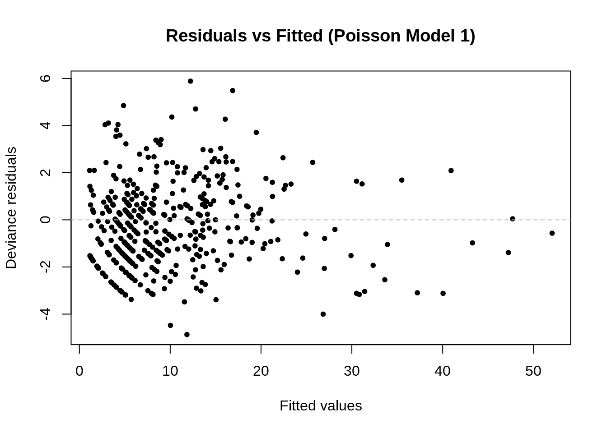

Analysis
Here we provide a detailed analysis using more sophisticated statistics techniques.
This comes from the file analysis.qmd.
Introduction
Ever since the first cases of HIV were detected in the late 1950s and early 1960s, it has been one of the deadliest diseases circulating. While modern medical advancements have turned it from a fatal diagnosis to a chronic condition, access to that medicine isn’t available to everyone.
New York City has long been a focal point in the fight against HIV/AIDS, but the burden of this disease is not shared equally. Our project investigates disparities in HIV and AIDS diagnoses across NYC neighborhoods and boroughs between 2010 to 2013 and 2016 to 2021. The data, originally compiled by New York City’s Department of Health and Mental Hygiene, offers a rich foundation for analyzing trends and disparities in diagnosis rates.
We focus on answering the following key questions:
How do total HIV and AIDS diagnoses differ by race and neighborhood? Are certain demographic groups experiencing disproportionately high rates of infection?
To start, it became evident that black people experienced disproportionately higher levels of HIV/AIDS. The following plot displays the number of HIV/AIDS cases compared to the proportion of black residents in an area.
The graph displays a clear relationship between the proportion of black residents in an area and the number of HIV/AIDS cases. The areas with the lowest proportions of residents generally have the fewest number of cases, although there’s one obvious outlier. This number of cases increases rapidly up to a certain percentage of black residents, when the number of cases doesn’t increase much, but then when the percentage of black residents reaches around 50%, the number of cases begins to rapidly increase again.
When analyzing the data, it became apparent some areas consistently had more HIV/AIDS cases than others. This lead to wanting to analyze what the cause of this trend was. Below is a plot demonstrating this trend.

As displayed above, some areas had significantly more cases than others. Noting how earlier it was noticed that areas with higher proportions of black residents had more HIV/AIDS cases, this plot was colored according to each neigborhood’s proportion of black residents. This pattern still emerged, as the areas with the most cases generally have the highest number of cases, although West Queens is an obvious outlier.
With the areas typically having the most cases also typically having the highest proportion of black resident, this begs the ultimate question of:
Do these areas have the most cases because they have the most black people, or do black people have the most cases because they live in these areas?
Modeling
Model One
To answer these questions, two statistical models were created.
The first model used was a Poisson model, with just black_prop as the main predictor and all secondary predictors, except the other race proportions and the neighborhoods. Using this formula answers the question of, “Does the proportion of black residents in a neighborhood predict the total number of HIV cases, when controlling for socioeconomic conditions?”.
Predictors were chosen based on the data New York City’s Environmental Health Data Portal had available, as they collect and store data in the same format as our original dataset, which is according to New York City’s UHF42 neighborhoods. This decision was made because it allowed for 42 unique values to our statistical model to be added, instead of five, with one being for each borough.
Below is a table of coefficients for the model’s predictors.
| Exponentiated Coefficients from the First Poisson Regression Model | |||
|---|---|---|---|
| Predictor | Rate Ratio | Std. Error | P-Value |
| (Intercept) | 3.830355e+31 | 14.631 | 0.0000 |
| YEAR | 9.630000e-01 | 0.007 | 0.0000 |
| `Estimated Poverty Rate` | 9.350000e-01 | 0.009 | 0.0000 |
| `Estimated Non-High School Graduation Rate` | 1.011000e+00 | 0.005 | 0.0419 |
| `Estimated Unemployment Rate` | 9.370000e-01 | 0.011 | 0.0000 |
| `Estimated Rent-Burdened Household Rate` | 1.062000e+00 | 0.006 | 0.0000 |
| `Estimated Non-Owner-Occupied Home Rate` | 1.040000e+00 | 0.002 | 0.0000 |
| `Estimated Child Poverty Rate` | 1.000000e+00 | 0.004 | 0.9315 |
| `Estimated Asthma Hospitalization Rate` | 1.011000e+00 | 0.002 | 0.0000 |
| `Estimated Crowded Household Rate` | 9.790000e-01 | 0.008 | 0.0050 |
| `Estimated Non-Health Insurance Rate` | 1.026000e+00 | 0.003 | 0.0000 |
| black_prop | 1.019000e+00 | 0.001 | 0.0000 |
In a base Poisson model, the estimate is given as the log of the expected count of the outcome variable, assuming the rest of the predictors are held constant. This means each coefficient represents the change in the log count of the outcome variable associated with a one-unit change in the predictor.
To ease interpretation, in the above table, every coefficient was exponentiated, using the formula e^estimate. This turns each coefficient into a rate ratio which reflects the multiplicative effect the predictor has on the expected number of occurrences of the outcome variable.
For the purpose of this analysis, where the outcome is the total number of HIV/AIDS cases, this means the following:
The coefficient for black_prop is approximately 1.02. This means that for a one-unit increase in black proportion, the expected number of total HIV/AIDS cases increases by approximately 2%, according to our model. A one-unit increase in this context would represent a 100% increase in the proportion of black residents. A 100% increase in the proportion of residents over any portion of time is unrealistic, so it makes more sense to interpret this in the sense of a 10% increase. In this case, a 10% increase in the proportion of black residents results in an approximately .2% increase in the expected number of total HIV/AIDS cases.
Variables which have a noticeable positive association with the outcome are the percent of rent-burdened households and the percent of non-owner-occupied households, which have coefficients of approximately 1.062 and 1.04 respectively. So a 10% increase in the number of rent-burdened households results in a 0.62% increase in the expected number of HIV/AIDS cases, and a 10% increase in non-owner-occupied home rates results in a 0.4% increase in the expected number of HIV/AIDS cases.
On the other hand, predictors like poverty rate and unemployment rate, perhaps surprisingly, have a noticeable negative association with the outcome, which have coefficients of 0.935 and 0.937 respectively. So a 10% increase in poverty rate will result in a 0.65% decrease in the expected number of total HIV/AIDS cases and a 10% increase in unemployment rate will result in a 0.63% decrease in the expected number of total HIV/AIDS cases.
Child poverty is the only predictor which had a p-value greater than 0.05, and it was much greater, being at 0.9315, suggesting it was not statistically significant in predicting the total number of HIV/AIDS cases. All other variables had a p-value less than 0.05, suggesting they’re all statistically significant, even black_prop, despite the low magnitude of its effect on the case number.
While the proportion of black residents only has a modest effect on the predicted number of total HIV/AIDS cases, it is statistically significant, even after adjusting for auxiliary socioeconomic factors. This suggests racial disparities in HIV/AIDS cases are not fully explained by socioeconomic factors and may reflect broader systemic inequalities. Analysis of the model occurs below, in order to assess how valid this finding is.
Below is a table of the model’s fit statistics.
| Fit Statistics of the First Poisson Regression Model | |
|---|---|
| Statistic | Value |
| Deviance | 1,324.25 |
| Null Deviance | 3,398.56 |
| AIC | 2,871.11 |
| BIC | 2,919.54 |
| Log-Likelihood | −1,423.55 |
| Pearson Chi-Square | 1,342.66 |
For a Poisson model, the rough equivalent of an r-squared value for a linear regression model is the deviance r-squared value. This is calculated as 1 - (Residual Deviance/Null Deviance) = 1 - (1324.25/3398.56) ≈ 0.61. This means the model captures around 61% of the deviance in total HIV/AIDS cases. This suggests the model is a solid fit for the data.
The model’s BIC is higher than it’s AIC, suggesting the model is more on the complex side, but not excessively so. The gap between the two suggests that a simpler model could be worth considering. The log-likelihood value is also on the larger side, but given the higher deviance r-squared value, the model continues to be a solid fit.
A Pearson Chi-Square value of 1342.66 also suggests the model is a good fit, as the value is close to the residual deviance value of 1324.25. The closeness signifies the model is not suffering from overdispersion, meaning the main assumption of a Poisson model, that the mean ≈ the variance, holds, at least well enough, for this model.
Below are some plots for further analysis of the model.

The residuals display no clear pattern and are randomly dispersed around 0, further demonstrating the model’s adequacy, as it fits well for most observations. As the fitted values increase, there appear to be some outliers, but they don’t appear to disrupt the overall fit. This is typical for count data, where the variance increases with the mean.
The normal q-q plot suggests the model adequately captures the data’s trends, as most of the plots are right along the diagonal reference line; however, there is significant deviance from the reference line towards the tails, suggesting there are outliers that don’t follow the data’s structure perfectly. These outliers could potentially be inhibiting the model’s performance and affecting its assumptions, so further testing or alternative approaches could be worthwhile.
Model 2
While the first model demonstrated that the proportion of black residents remains a statistically significant predictor of the total number of HIV/AIDS cases after accounting for various socioeconomic factors, it did not account for possible geographic variation across neighborhoods. Differences in healthcare access, community-level infrastructure, or localized social conditions may influence HIV rates independently of measured covariates. To account for these differences, this second model incorporates neighborhood as a categorical predictor. Using this formula answers the question of, “Does the proportion of black residents in a neighborhood predict the total number of HIV cases, when accounting for both socioeconomic conditions and neighborhood-level factors?”.
The UHF neighborhood Stapleton - St. George on Staten Island was used as a reference because it had a median HIV/AIDS contraction rate and was racially diverse.
Below is a table of coefficients for the model’s predictors.
| Exponentiated Coefficients from the Second Poisson Regression Model | |||
|---|---|---|---|
| Predictor | Rate Ratio | Std. Error | P-Value |
| (Intercept) | 1.541994e+80 | 32.967 | 0.0000 |
| YEAR | 9.130000e-01 | 0.016 | 0.0000 |
| `Neighborhood (U.H.F)`Bayside - Little Neck | 1.230000e-01 | 0.626 | 0.0008 |
| `Neighborhood (U.H.F)`Bedford Stuyvesant - Crown Heights | 1.135800e+01 | 0.946 | 0.0102 |
| `Neighborhood (U.H.F)`Bensonhurst - Bay Ridge | 4.750000e-01 | 0.469 | 0.1127 |
| `Neighborhood (U.H.F)`Borough Park | 7.100000e-01 | 0.664 | 0.6053 |
| `Neighborhood (U.H.F)`Canarsie - Flatlands | 2.810000e+00 | 0.487 | 0.0337 |
| `Neighborhood (U.H.F)`Central Harlem - Morningside Heights | 6.167000e+00 | 1.074 | 0.0902 |
| `Neighborhood (U.H.F)`Chelsea - Clinton | 2.831000e+00 | 0.823 | 0.2063 |
| `Neighborhood (U.H.F)`Coney Island - Sheepshead Bay | 1.522000e+00 | 0.449 | 0.3497 |
| `Neighborhood (U.H.F)`Crotona - Tremont | 4.553000e+00 | 1.221 | 0.2144 |
| `Neighborhood (U.H.F)`Downtown - Heights - Park Slope | 1.717000e+00 | 0.606 | 0.3721 |
| `Neighborhood (U.H.F)`East Flatbush - Flatbush | 5.725000e+00 | 0.867 | 0.0441 |
| `Neighborhood (U.H.F)`East Harlem | 2.800000e+00 | 1.198 | 0.3900 |
| `Neighborhood (U.H.F)`East New York | 3.684000e+00 | 0.792 | 0.0995 |
| `Neighborhood (U.H.F)`Flushing - Clearview | 9.290000e-01 | 0.300 | 0.8050 |
| `Neighborhood (U.H.F)`Fordham - Bronx Park | 4.029000e+00 | 1.180 | 0.2377 |
| `Neighborhood (U.H.F)`Fresh Meadows | 2.800000e-01 | 0.351 | 0.0003 |
| `Neighborhood (U.H.F)`Gramercy Park - Murray Hill | 9.370000e-01 | 0.606 | 0.9138 |
| `Neighborhood (U.H.F)`Greenpoint | 5.380000e-01 | 1.002 | 0.5364 |
| `Neighborhood (U.H.F)`Greenwich Village - Soho | 5.540000e-01 | 0.802 | 0.4619 |
| `Neighborhood (U.H.F)`High Bridge - Morrisania | 5.470000e+00 | 1.215 | 0.1620 |
| `Neighborhood (U.H.F)`Hunts Point - Mott Haven | 3.119000e+00 | 1.163 | 0.3279 |
| `Neighborhood (U.H.F)`Jamaica | 3.118000e+00 | 0.387 | 0.0033 |
| `Neighborhood (U.H.F)`Kingsbridge - Riverdale | 5.780000e-01 | 0.534 | 0.3049 |
| `Neighborhood (U.H.F)`Long Island City - Astoria | 1.759000e+00 | 0.957 | 0.5554 |
| `Neighborhood (U.H.F)`Lower Manhattan | 2.560000e-01 | 0.892 | 0.1266 |
| `Neighborhood (U.H.F)`Northeast Bronx | 2.893000e+00 | 0.503 | 0.0346 |
| `Neighborhood (U.H.F)`Pelham - Throgs Neck | 3.563000e+00 | 0.651 | 0.0510 |
| `Neighborhood (U.H.F)`Port Richmond | 6.220000e-01 | 0.301 | 0.1154 |
| `Neighborhood (U.H.F)`Ridgewood - Forest Hills | 1.083000e+00 | 0.392 | 0.8389 |
| `Neighborhood (U.H.F)`Rockaway | 1.313000e+00 | 0.491 | 0.5795 |
| `Neighborhood (U.H.F)`South Beach - Tottenville | 4.600000e-01 | 0.691 | 0.2614 |
| `Neighborhood (U.H.F)`Southeast Queens | 1.261000e+00 | 0.651 | 0.7214 |
| `Neighborhood (U.H.F)`Southwest Queens | 1.747000e+00 | 0.226 | 0.0133 |
| `Neighborhood (U.H.F)`Sunset Park | 3.770000e-01 | 0.852 | 0.2521 |
| `Neighborhood (U.H.F)`Union Square - Lower East Side | 1.930000e+00 | 0.929 | 0.4793 |
| `Neighborhood (U.H.F)`Upper Eastside | 7.350000e-01 | 0.598 | 0.6066 |
| `Neighborhood (U.H.F)`Upper Westside | 1.623000e+00 | 0.602 | 0.4212 |
| `Neighborhood (U.H.F)`Washington Heights - Inwood | 2.843000e+00 | 1.124 | 0.3525 |
| `Neighborhood (U.H.F)`West Queens | 2.685000e+00 | 0.652 | 0.1298 |
| `Neighborhood (U.H.F)`Williamsburg - Bushwick | 4.045000e+00 | 1.007 | 0.1653 |
| `Neighborhood (U.H.F)`Willowbrook | 1.040000e-01 | 0.703 | 0.0013 |
| `Estimated Poverty Rate` | 9.590000e-01 | 0.018 | 0.0216 |
| `Estimated Non-High School Graduation Rate` | 1.014000e+00 | 0.015 | 0.3597 |
| `Estimated Unemployment Rate` | 9.430000e-01 | 0.019 | 0.0022 |
| `Estimated Rent-Burdened Household Rate` | 9.900000e-01 | 0.013 | 0.4455 |
| `Estimated Non-Owner-Occupied Home Rate` | 1.004000e+00 | 0.025 | 0.8736 |
| `Estimated Child Poverty Rate` | 1.009000e+00 | 0.008 | 0.2414 |
| `Estimated Asthma Hospitalization Rate` | 1.002000e+00 | 0.004 | 0.6827 |
| `Estimated Crowded Household Rate` | 1.052000e+00 | 0.025 | 0.0460 |
| `Estimated Non-Health Insurance Rate` | 1.004000e+00 | 0.004 | 0.3397 |
| black_prop | 9.970000e-01 | 0.010 | 0.7915 |
The coefficient for black_prop is approximately 0.997. This means that for a one-unit increase in black proportion, the expected number of total HIV/AIDS cases decreases by approximately 0.003%, according to the model. Again, a one-unit, or 100% increase, is unrealistic, so adjusting for that, this means a 10% increase in the proportion of black residents results in an approximately 0.0003% in the expected number of total HIV/AIDS cases, which is negligible.
Compared to the first model, the coefficients of some predictors changed. For example, in the first model, unemployment rate had a negative association with the total number of HIV/AIDS cases, but in this model, it has a positive association. The same goes for the rent-burdened household rate. This suggests that variation between neighborhoods was confounding the relationship, meaning neighborhoods with high rates of rent-burdened households and unemployment might also have other unmeasured characteristics that masked the true positive effect of these predictors on HIV rates.
For black_prop, the same concept applies. The shift from a positive association to negative association when neighborhood was added as a predictor suggests the disproportionate amount of HIV/AIDS cases experienced by black people are not due to race itself, but rather due to socioeconomic factors and neighborhood-level conditions, which disproportionately affect black people.
On the other hand, the crowded household rate is the only predictor which went from a positive to negative household rate. This suggests the true effect of crowded households on HIV/AIDS cases was benign confounded by neighborhood-level factors which weren’t controlled for in the first model and once they were, the true effect of crowded household rates on HIV/AIDS contraction became more apparent.
Compared to the first model, many predictors had a p-value greater than 0.05. This is likely due to the increased model complexity. With so many more predictors, with the new one being a geographic location, which will overlap with some of the socioeconomic conditions already controlled for, the exact significance of each predictor becomes more difficult to ascertain.
Analysis of this model follows. Below is a table of the model’s fit statistics.
| Fit Statistics of the Second Poisson Regression Model | |
|---|---|
| Statistic | Value |
| Deviance | 618.08 |
| Null Deviance | 3,398.56 |
| AIC | 2,246.94 |
| BIC | 2,460.82 |
| Log-Likelihood | −1,070.47 |
| Pearson Chi-Square | 591.20 |
This model’s deviance r-squared value is 1 - (618.08/3398.56) ≈ 0.818, meaning this model explains around 81.8% of the deviance in total HIV/AIDS contraction cases. This makes this model stronger than the previous model and a strong fit overall.
Like the first, the model’s BIC is higher than its AIC, which is expected considering the model became more complex due to adding many new predictors. The increased gap between the two suggests that a simpler model could still be worth considering. The log-likelihood value is also on the larger side, but given the higher deviance r-squared value, the model continues to be a strong fit.
A Pearson Chi-Square value of 591.20 also suggests the model is a good fit, as the value is close to the residual deviance value of 618.08. Just like the first model, the closeness between the two values continues to suggest these models don’t suffer from overdispersion.
Below are plots for further analysis of the model.
The pattern displayed in this residual plot mimics the pattern of the first residual plot. The residuals display no clear pattern and are randomly dispersed around 0, further demonstrating the model’s adequacy, as it fits well for most observations. As the fitted values increase, there appear to be some outliers, but they don’t appear to disrupt the overall fit. This is typical for count data, where the variance increases with the mean.
Like the first normal q-q plot, this plot also suggests the model adequately captures the data’s trends, as most of the plots are right along the diagonal reference line; however, there is significant deviance from the reference line towards the tails, suggesting there are outliers that don’t follow the data’s structure perfectly. These outliers could potentially be inhibiting the model’s performance and affecting its assumptions, so further testing or alternative approaches could be worthwhile.
After accounting for the neighborhood as a predictor, the model suggests race itself is not the determining factor in the total number of HIV/AIDS, but rather the structural and socioeconomic conditions people experience. The trend of black people having disproportionately higher HIV/AIDS contraction rates would likely be explained by black people being disproportionately affected by these structural and socioeconomic conditions, perhaps reflecting broader systemic issues within New York City’s infrastructure.
Limitations
Both models have many of the same limitations. A factor that could be considered a limitation is what made the dataset so easy to work with in the beginning, which is that the data was stored according to New York City’s UHF42 neighborhoods. While this allowed for easy storage and data manipulation, it made finding other datasets to join and other variables to add as a predictor rather difficult, as the data had to be stored in a similar format, in order to not compromise the integrity of our model by including fewer data points than neighborhoods they would be applied to. This meant some predictors which may be statistically significant, like drug usage, age and sex demographics, and proportion of LGBTQ residents, couldn’t be added because if this data was available, it wasn’t available at the UHF 42 level. The only time data was added that didn’t have data stored according to UHF42 neighborhoods was for the health insurance rate predictor. This data was stored in UHF34 neighborhoods. The reasons it was still added to the dataset are 34 values was enough for a variable we thought would be very helpful for our model and many of the UHF34 and UHF42 neighborhoods are the exact same; the UHF34 neighborhoods that are different are formed by combining several UHF42 neighborhoods, so some UHF42 neighborhoods had their exact health insurance rates.
The next limitation our models have is many of the rates in the dataset are predicted rates generated using a polynomial model. The reason this had to be done is the majority of data stored according to UHF42 neighborhoods was also stored in five-year periods, such as 2017-2021 inclusive, then 2016-2020, 2015-2019, and so on, and giving the average value over that time period. The original HIV dataset was stored year-by-year, not according to these five-year periods, so to get values for our predictors, the middle year of each five year time period was taken and the average value over the corresponding five-year period was assigned to that middle year. This supplied data for every year in the original dataset, except 2020 and 2021, so a polynomial model was used to predict the values for those two years. This process was used for every predictor variable stored according to this format.
The final major limitation of these models is the main assumption of every Poisson model, which is that the mean equals the variance. It makes this assumption due to the form of the distribution. If the data being modeled doesn’t fit this distribution well, even if it’s a count variable, then using a Poisson model will result in overdispersion, although this didn’t seem to be a glaring issue in this particular analysis.